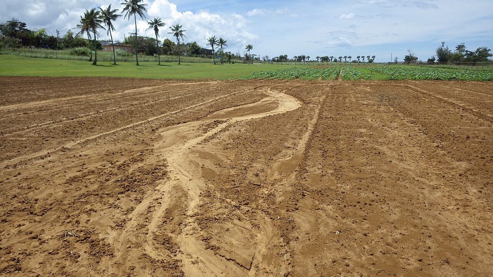
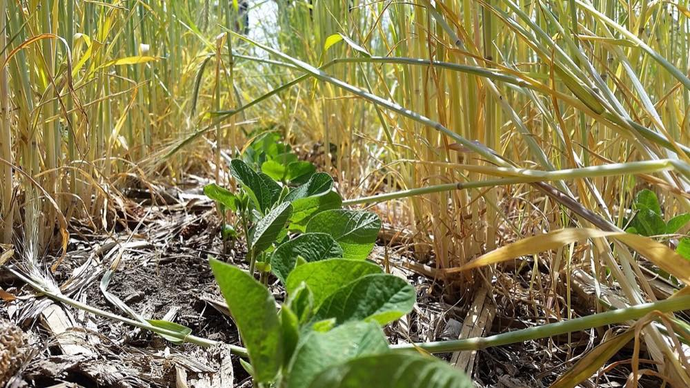

Free soil check for your field
Is your topsoil washing away?
See how well your field is covered when heavy rain hits, then compare crop cycles that hold more soil in place.
- 21 years
- of daily NASA weather for your field
- 16 days
- between NASA satellite pictures of your field's greenness
- 3 cycles
- compared side by side, including yours
- No login
- free, and nothing you enter leaves your computer
Heavy rain on bare ground carries your topsoil away.



How it works.
- 01
Pick your field
Click it on the map and choose what you grow now.
- 02
See your soil check
Which months your soil sits bare when heavy rain comes, from NASA data.
- 03
Compare and save
Three crop cycles ranked by what matters to you. Save them to My farm.
See what your field needs.
About five minutes. Take the results to your extension agent.
Check my fieldHow it works
Four steps, about five minutes
-
Pick your field
Choose it on the map and tell us what you grow.
-
See your soil check
Four warning signs from 20 years of NASA data.
-
Compare three cycles
Your rotation plus two others, ranked by what matters to you.
-
Save and check back
Keep your results on My farm and compare over time.
Why cover matters

How it helps you
- Shows the months your soil sits bare when heavy rain comes.
- Compares your rotation with two others, side by side.
- Shows the evidence, and what we don't know, for every option.
- Gives you questions to take to your extension agent.
Tell us about your field
Pick the closest match.
What satellites recorded on this field USDA CropScape
Four warning signs for your soil
The first three follow USDA NRCS, SARE and Virginia Cooperative Extension soil health advice. The fourth is our own check built on NASA soil-wetness data.
The science behind it: the soil erosion equation (RUSLE)
A = R × K × LS × C × P
USDA's Revised Universal Soil Loss Equation: soil loss (A) comes from five factors multiplied together. Only C, cover, changes with what you plant.
Your year, month by month
Green: a crop is growing. Tan: the ground is bare in some years. Warnings mark bare ground in heavy-rain months.
NDVI is a satellite measure of how green the ground is, from about 0 (bare soil) to 1 (thick green crop).
Compare three crop cycles
What matters to you
Move the sliders. The options re-rank right away.
More about your farm (soil texture, hay)
Fit scores run from 0 to 100. See "The science" for the rules.
Ask about these results AI helper
Ask in your own words, for example "Why does the first option score higher?" or "What does NDVI mean?" The helper only sees the numbers on this page.
AI-generated answers can be wrong. The scores above come from fixed, published rules, not from this helper. Answers by Google Gemini through Firebase. Check anything important with your extension agent.
Account
Sign in to keep your farm on any device
You don't need an account. Every part of the tool works without one. Signing in only lets your saved soil checks follow you to your phone or another computer.
What we store: your email (kept by Firebase Authentication) and the soil checks you choose to save. Nothing else. Only you can read your checks.
My farm
Your saved soil checks
Save a check on step 4, then come back any time to reopen it or see how it changed.
Saved on this device only. Nothing is sent anywhere.
The science
Why we believe this
RUSLE, the soil erosion equation
USDA has used the Universal Soil Loss Equation to plan soil conservation on farms since the 1960s; the revised version (RUSLE) is in USDA Agriculture Handbook 703 (Renard and others, 1997). It says soil loss = rain erosivity (R) × soil erodibility (K) × slope (LS) × cover (C) × conservation practices (P). Rain, soil and slope are mostly fixed for a field, so cover is the main factor a farmer controls through the crop cycle.
What we do not do: we do not compute soil loss in tons per acre. True R needs 30-minute rainfall intensity, and NASA POWER is daily. Slope length is unknown. Exact C values need crop-stage tables. So we show each factor with the real value we have, and say which are stand-ins.
Soil can't be measured from space directly. So we look for the conditions that wear soil down and show which crop cycles reduce them. Each warning sign comes from a published soil health principle:
Soil washing away
Bare soil hit by heavy rain loses topsoil; plant cover and roots hold it in place. Basis: USDA NRCS soil health practice "maximize cover".
Our data: NASA POWER days with over 2 in (50 mm) of rain, MODIS greenness, USDA soil slope.
Soil losing organic matter
Living roots feed soil life and add organic matter; long bare periods starve it. Basis: USDA NRCS "support living roots" and SARE Managing Cover Crops Profitably.
Our data: crop calendar for each rotation, MODIS greenness.
Nitrogen running down
Legumes such as soybean, clover and alfalfa host bacteria that pull nitrogen from the air into the soil. Basis: VCE Agronomy Handbook and SARE.
Our data: crop table (nitrogen-fixing column).
Thirsty crops in drying months
A high-water crop grown in months when root-zone soil runs drier than usual stresses the crop and the soil. Basis: our crop table. Most water-need ratings there are our own reading of VCE and SARE, not stated by them; VCE does say sorghum handles drought better than corn (see docs/CROP_CHECK.md).
Our data: NASA POWER root-zone soil wetness (GWETROOT), crop table.
Weather details for your field NASA POWER
Your soil survey USDA soil survey
Words we use
- Soil erosion
- Topsoil carried off a field by rain or wind. Topsoil holds most of a field's nutrients and organic matter, and it takes many years to rebuild.
- RUSLE
- The Revised Universal Soil Loss Equation, USDA's formula for how much soil rain washes off a field: A = R × K × LS × C × P.
- Rainfall erosivity (R)
- How hard and how often rain hits the ground. A few heavy storms do more damage than many light showers.
- Soil erodibility (K)
- How easily a soil's particles break loose and wash away. It comes from the soil's mix of sand, silt, clay and organic matter.
- Cover-management factor (C)
- How well plants and residue shield the soil from rain. Living cover in rainy months lowers C, and so lowers soil loss.
- NDVI (greenness)
- A satellite measure of how green and leafy the ground is, from about 0 (bare soil) to 1 (thick green crop).
- Evapotranspiration
- Water that leaves a field as vapor, from the soil drying and from plants "breathing out" through their leaves.
- Soil-moisture anomaly
- How much wetter or drier the soil is than usual for that month. Negative means drier than normal.
- Frost risk
- The chance of a night at or below freezing (0 °C, 32 °F) while a frost-sensitive crop is in the ground.
- Frost-free season
- The number of days between the last spring frost and the first fall frost.
- Organic matter
- The dark, crumbly part of soil made from old roots and plants. It holds water and feeds crops.
- Bare-field window
- Weeks when nothing is growing, so soil can wash or blow away and no roots feed the soil.
- Satellite vs ground data
- Satellites see the whole field from above, often at coarse resolution. A rain gauge is exact, but only for one spot. Using both gives a better picture.
- Nitrogen-fixing crop
- Legumes like soybean, clover and alfalfa host bacteria on their roots that pull nitrogen from the air into the soil, which can cut fertilizer needs.
- Cover crop
- A crop grown to protect and feed the soil, not to sell. It keeps roots in the ground between cash crops.
- Deep-rooting crop
- Crops like sorghum, alfalfa and radish push roots deep, which breaks up packed soil and helps rain soak in.
- Drought-tolerant crop
- A crop such as sorghum that keeps growing through dry spells better than thirstier crops such as corn.
How scoring works
No black box. Each option gets five sub-scores from simple rules. Your sliders decide how much each counts. The four warning signs are separate yes-or-no checks, described above.
- Save water: starts from the main crops' water need in our crop table. On a rain-fed field, thirsty crops lose points for every summer month where NASA POWER shows root-zone soil drier than normal in 2021–2025, and on sandy soil.
- Build soil health: points for living roots every winter, a nitrogen-fixing crop, a deep-rooted crop, and more plant families.
- Extra income: harvests per year (not dollars, since we have no local prices; hay counts as half a harvest unless you say you can sell or feed it), minus points for heat-sensitive crops when recent summers are hot and for crops whose window crosses your usual frost dates.
- Forage: the forage value of the crops in our table.
- Reduce erosion: how much of the year the ground is covered, with extra weight on the months when NASA POWER shows heavy rain (over 2 in / 50 mm in a day) has fallen.
The scoring code is in js/scoring.js and the thresholds are in js/indicators.js. The API docs are in docs/API.md.
Data and sources we used
- NASA POWER (daily temperature, rain, soil wetness, 2005–2025): power.larc.nasa.gov
- MODIS MOD13Q1 NDVI (250 m greenness every 16 days) via the ORNL DAAC subset service: modis.ornl.gov
- USDA NRCS soil survey (SSURGO) via Soil Data Access: sdmdataaccess.sc.egov.usda.gov
- USDA NASS Cropland Data Layer (CropScape) for each field's crop history, 2016–2025: nassgeodata.gmu.edu/CropScape
- RUSLE: Renard, K.G. and others, 1997, Predicting Soil Erosion by Water: A Guide to Conservation Planning with the Revised Universal Soil Loss Equation (RUSLE), USDA Agriculture Handbook 703. Chapter record: ars.usda.gov
- USDA NRCS soil health principles ("reduce disturbance, maximize cover, promote biodiversity, and support living roots"): nrcs.usda.gov soil health
- Crop traits: Virginia Cooperative Extension Agronomy Handbook and SARE Managing Cover Crops Profitably. Each row links to its source in data/crops.csv.
- Photos: USDA NRCS, public domain, via Wikimedia Commons. Details in SOURCES.md.
Full list with licenses in SOURCES.md.